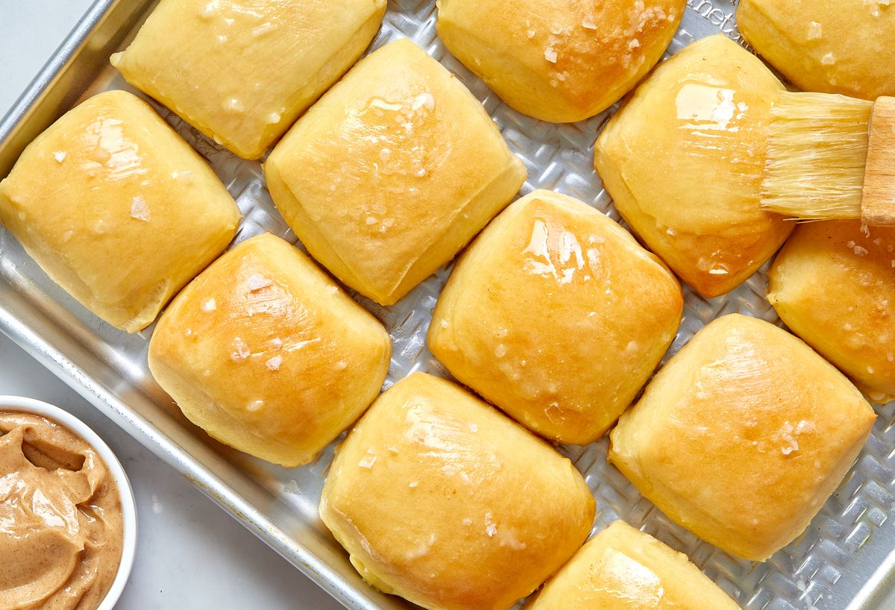

Copycat Texas Roadhouse Rolls

This copycat recipe is just as tender and fluffy as the original.
You may go to Texas Roadhouse to order a steak, but we all know the best
part of the meal is the basket of dinner rolls. These soft, pillowy
squares come to the table fresh from the oven, and the accompanying
cinnamon-honey butter is worth the trip alone. This copycat recipe is just
as tender and fluffy as the original, but you can enjoy it from the
comfort of your own kitchen.
These rolls are decadent from start to finish: There’s butter in the
dough, melted butter brushed on top, and the classic cinnamon-honey butter
served on the side. Just like at Texas Roadhouse, these rolls are best
served straight out of the oven. But if you need to make these ahead of
time, wrap the finished rolls in foil and plastic wrap, then store them in
the freezer for up to 1 month. After thawing at room temperature
overnight, you can reheat these rolls in the foil for about 10 minutes.
Ingredients
Dough
- 1 1/2 c. (340 g.) whole milk
- 1/4 c. (50 g.) granulated sugar
- 1 (1/4-oz.) packet or 2 1/4 tsp. active dry yeast
- 3 large eggs, beaten to blend
- 4 Tbsp. (1/2 stick) unsalted butter, softened
- 4 tsp. kosher salt
- 6 3/4 c. (810 g.) all-purpose flour, plus more for dusting
- Neutral oil, for greasing
Cinnamon-Honey Butter & Assembly
- 1 Tbsp. confectioners' sugar
- 1 tsp. honey
- 1 tsp. kosher salt
- 3/4 tsp. ground cinnamon
- 3/4 c. (1 1/2 sticks) unsalted butter, softened, divided
- Flaky sea salt (optional)
Steps
Dough
-
In a small saucepan over medium heat, heat milk until warm to the touch,
between 100° to 110°. In the large bowl of a stand mixer fitted with the
dough hook, combine warm milk, granulated sugar, and yeast. Let sit
until yeast is dissolved and foamy, about 10 minutes.
-
Add eggs, butter, and kosher salt and beat on low speed until just
combined. Add flour and continue to beat on low speed until dough comes
together, about 5 minutes.
-
Turn out dough onto a lightly floured surface and knead until smooth,
about 5 minutes. Transfer dough to a lightly oiled bowl, cover with
plastic wrap, and let rise at room temperature until doubled in size,
about 1 hour.
-
Line 2 baking sheets with parchment. Return dough to lightly floured
surface and roll to a 1"-thick rectangle. Using a sharp knife or pizza
cutter, cut dough into 2" squares. Transfer squares to prepared sheets,
spacing about 1/2" apart. Cover each sheet with a dish towel and let
rise until doubled in size, about 45 minutes.
Cinnamon-Honey Butter & Assembly
-
In a large bowl, whisk confectioners’ sugar, honey, kosher salt,
cinnamon, and 1 stick butter until thoroughly combined and fluffy.
-
Preheat oven to 375°. Melt remaining 1/2 stick butter in the microwave
or in a small pot. Brush each square with butter.
- Bake rolls until golden brown and risen, about 15 minutes.
-
Brush rolls with more melted butter and sprinkle with sea salt, if
using. Serve with cinnamon-honey butter alongside.
-
Make Ahead: Rolls can be made 1 month ahead. Let cool, tightly wrap in
foil, then in plastic wrap, and freeze. When ready to eat, let rolls
thaw at room temperature overnight. Remove plastic wrap and loosen foil,
then bake at 300° for 10 minutes to heat through. Cinnamon-honey butter
can be made 7 days ahead. Store in an airtight container and
refrigerate. Bring to room temperature before serving.